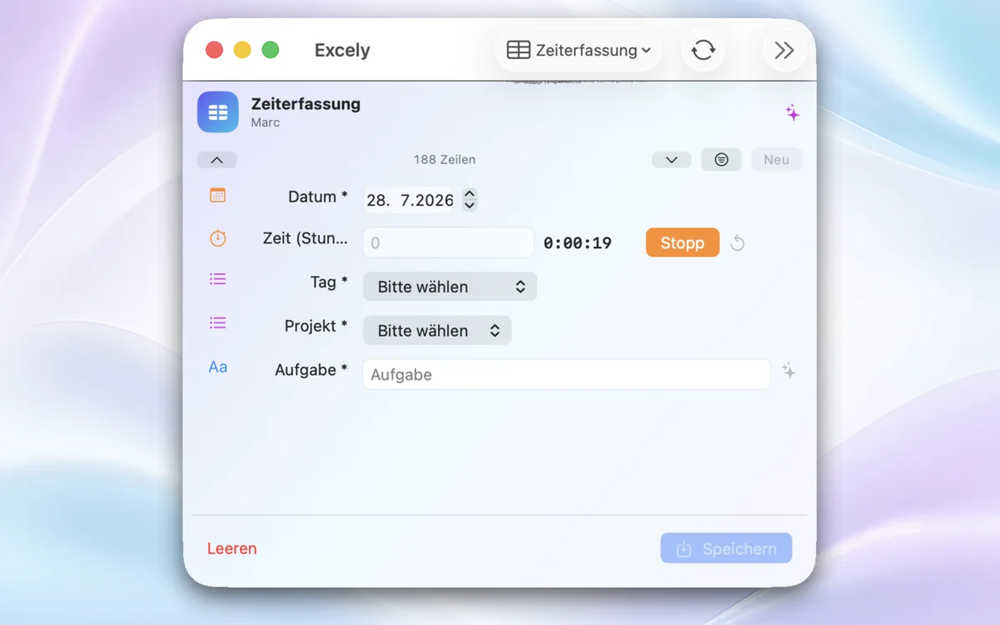
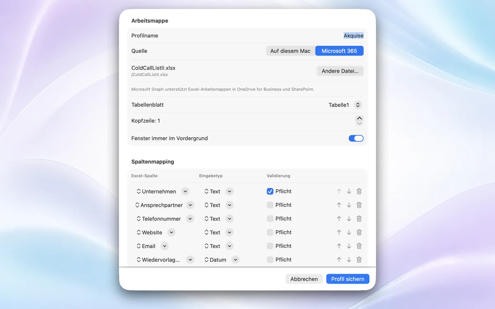
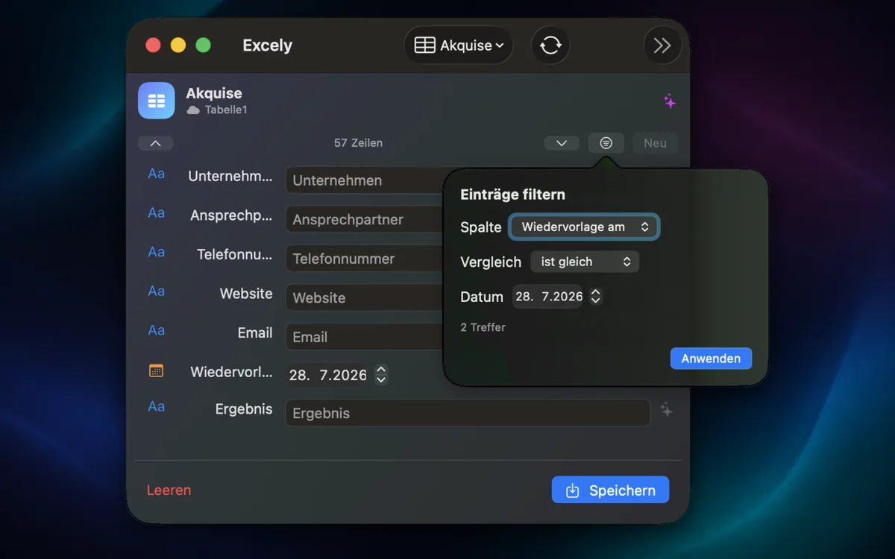
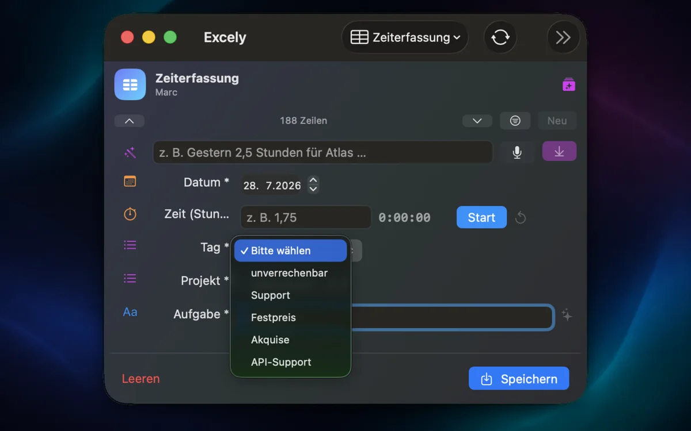

Anmeldung oder Datei fehlt
- Geschäfts- oder Schulkonto verwenden.
- Zugriff auf die Arbeitsmappe in OneDrive oder SharePoint prüfen.
- In Tablivio abmelden und erneut verbinden.
TABLIVIO SUPPORT
Hier finden Sie Hilfe beim Einrichten von Tablivio, beim Verbinden Ihrer Arbeitsmappen und bei Fragen zu Microsoft 365, lokalen Dateien und Datenschutz.

ERSTE HILFE
Wählen Sie den Bereich, der zu Ihrer Situation passt. Die häufigsten Ursachen lassen sich direkt in wenigen Schritten prüfen.
DIE ECHTE APP
Tablivio folgt den Bedienmustern von macOS und iOS. Die Mac-App zeigt auch große Profile auf kleinem Raum; die iPhone-App bringt dieselben strukturierten Formulare unterwegs in Microsoft 365.



GUT VORBEREITET
Falls die Hinweise nicht ausreichen, senden Sie uns bitte eine kurze Fehlerbeschreibung. Diese Angaben helfen bei einer gezielten Antwort:
DATENKONTROLLE
Tablivio betreibt keinen eigenen Cloud-Dienst. Die App enthält keine Werbung, keine Analyse-SDKs und kein Tracking.
Profile, Einstellungen und lokale Nachweise verbleiben auf dem jeweiligen Gerät.
Cloud-Arbeitsmappen werden direkt über Microsoft Graph gelesen und aktualisiert.
Anmeldenachweise und bestätigte Einträge liegen geschützt im Apple-Schlüsselbund.
SCHNELL EINGERICHTET
Auf dem Mac eine lokale .xlsx-Datei wählen oder auf Mac und iPhone mit Microsoft 365 anmelden.
Tabellenblatt, Kopfzeile, Spalten, Feldtypen und gewünschte Prüfungen festlegen.
Formular ausfüllen, speichern und den von Tablivio verifizierten Eintrag direkt in Excel weiterverwenden.
VORAUSSETZUNGEN
HÄUFIGE FRAGEN
Die wichtigsten Hinweise zu Konten, Arbeitsmappen, Verifizierung und gespeicherten Daten.
Tablivio ist für Microsoft-365-Geschäfts- und Schulkonten ausgelegt. Die Arbeitsmappe muss für das angemeldete Konto in OneDrive for Business oder SharePoint erreichbar sein.
Lokale .xlsx-Dateien werden über Microsoft Excel für Mac geschrieben. macOS schützt diese Zusammenarbeit mit einer Automatisierungsfreigabe, die Sie in den Systemeinstellungen kontrollieren können.
Tablivio liest die geschriebenen Zellen erneut aus Excel. Erst wenn die Zielzeile mit den eingegebenen Werten übereinstimmt, wird der Eintrag als bestätigt angezeigt.
Nein. Tablivio betreibt keinen eigenen Cloud-Dienst. Lokale Dateien bleiben auf dem Mac; Microsoft-365-Inhalte werden direkt zwischen der App und Microsoft Graph übertragen.
Nennen Sie Gerät, System- und App-Version, die verwendete Arbeitsweise sowie den letzten Schritt vor dem Problem. Bitte senden Sie keine vollständigen Arbeitsmappen oder Zugangsdaten.
PERSÖNLICHER SUPPORT
Beschreiben Sie kurz, was Sie erreichen wollten und an welchem Schritt es nicht weiterging. Wir antworten direkt per E-Mail.